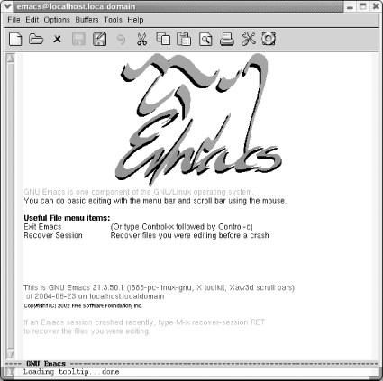

1.4. Starting Emacs
To start Emacs,
simply click on the Emacs icon or type
emacs on the command line and press
Enter.
|
Click on the Emacs icon or, from the command line, type: emacs Enter
| |

| |
Starting Emacs.
|
You'll see a short message describing a few
important menu items and the version of Emacs that
you're running. It may appear as a graphical splash
screen (like the one shown here) or a text splash screen. This
message disappears as soon as you type the first character. Emacs
then puts you in an (almost) empty buffer called
*scratch*, an ideal place for you to experiment.
|